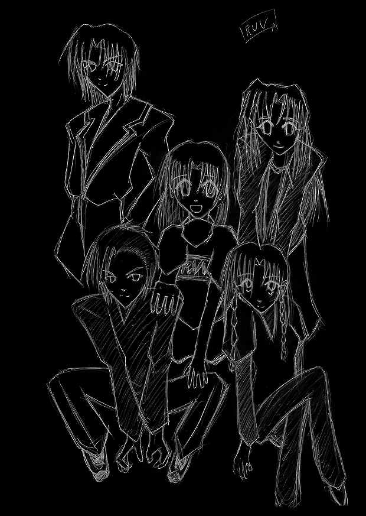

登場人物

大王子 愁
１８歳 １８０cm ６５kg
温厚で、黙っていればどこぞの御曹司である。
チームを纏める役回りが多く、
相模とは良き仲で、３年来の付き合いである。
風を操る力を持つ。
坂上 夜沙音
１５歳 １５７cm ４２kg
本編の主人公で、本名は坂上晃。
能力の使い方を誤り、自分の体を女に変化させてしまった。
大人しく、静かな少女（？）だが、高い能力を持つ。
物質の形状を変形させる力を持つ。
有川 紫季
１２歳 １４５cm ３５ｋｇ
静かで、使命感の強い少女。
過去の境遇が苦しかった為、リアリストな一面も持っている。
晃とは、仲の良い歳の離れた親友の関係だった。
物質の代謝を早め、人を癒す能力を持つ。
相模 郁美
１８歳 １７５cm ６１ｋｇ
短気な所があるが、気の良い青年。
普段は軽いが、深いところで思慮深い一面も持つ。
女みたいな名前だということを気にしている。
炎を操る力を持つ。
亜麻野 響子
１５歳 １６１cm ４５kg
明るい性格の、元気な少女。
根っからの不良で、遅刻欠席当たり前の問題児である。
時折、枯れたような表情を見せることもある。
水を操る能力を持つ。
空峰 燐香（１５）
夜沙音（晃）の幼馴染で、クラスメート。
明るく、愛嬌のある少女で、晃に片思いだった。
不良や素行の悪い人間を嫌う。
山崎 修吾（１６）
夜沙音（晃）の、クラスメート。
晃とは親友で、燐香と三人で良い関係だった。
元は、かなりの不良だったらしい。
秋代 杏奈（２４）
大桜学園の保険の教師で、レンツァーティアの小隊長。
普段は明るく、いい加減な所もあるが、
言うべき時には一本筋の通った、夜沙音たちには、良い先生。
石沢 光栄（２０）
大皇政会会長、石沢陽之助の一人息子。
見てくれは、男でもうっとりする絶景の美青年だが、
その正体は、つかみ所の無い深さと暗さを持つ存在。